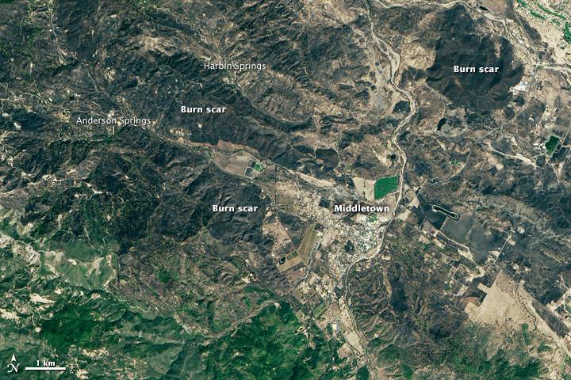
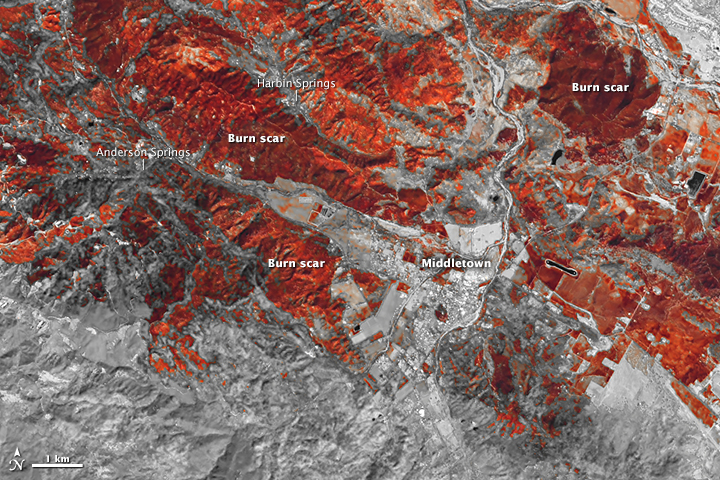

Turn21
September
September
We found a huge pile of carbon and hydrocarbons and we gave ourselves permission to burn it, mostly without anything to show for it afterwards. The longer we continue doing this the worse the future will be.
Scroll

"The Valley Fire has already become one of California’s most damaging fires. Only two other blazes—the Cedar fire in 2003 and the Tunnel Fire in 1991—destroyed more structures.”

"In 48 hours the fire burned through and area twice the size of Manhattan. Meanwhile, extreme drought over the past four years has sucked the forests dry of moisture, leaving the trees unusually combustible. Bark beetles, taking advantage of water stressed trees, have also made the pine forests vulnerable.”
More than 400 homes were lost and thousands fled. One resident from the area recorded these videos showing what it was like to escape through the flames.
Wildfires in the western United States have been increasing in frequency and duration since the mid-1980s, occurring nearly four times more often, burning more than six times the land area, and lasting almost five times as long.
“The Valley Fire is breaking all the rules in the midst of a fire season that had already rewritten the rulebook," Daniel Swain, a climate earth system scientist at Stanford University, said.
"What’s going on in Lake County is a direct manifestation of California’s record-breaking drought, and it’s pretty sobering.”
We call it the 21st Century.
It’s time for Homo sapiens to grow up
before we drive the hotrod of civilization off a cliff.
Take action today.
Let's turn 21.
turn21.org
It’s time for Homo sapiens to grow up
before we drive the hotrod of civilization off a cliff.
Take action today.
Let's turn 21.
turn21.org